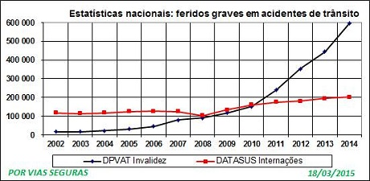

Conhecer o mal para definir os remédios. As causas são classificadas em três categorias de fatores de risco: fatores humanos, fatores ligados à infra-estrutura e ao meio-ambiente, fatores ligados aos veículos.
Estatísticas em nosso país
Índice de mortes, feridos e faixa etária de idade dos acidentados.
Índice de mortes no país
O gráfico mostra a evolução do número de óbitos registrados pelo Ministério da Saúde de 2004 a 2014, com aumento de 1,9% no último ano.
Brasil é o quinto país no mundo em mortes por acidentes no trânsito
A cada ano, cerca de 45 mil pessoas perdem suas vidas em acidentes de trânsito no Brasil. A violência envolvendo particularmente motociclistas está se tornando uma epidemia no país. Dados preliminares do Ministério da Saúde apontam que, em 2013, os acidentes com motos resultaram em 12.040 mortes.

Índice de feridos
O gráfico mostra a evolução, de 2002 a 2014, de dois indicadores referentes aos feridos que sofreram lesões graves.A curva "DATASUS" representa o número de pessoas que foram internadas em hospital em decorrência de acidentes de trânsito.
A curva "DPVAT" representa o número de pessoas que foram indenizadas por invalidez permanente cada ano. Isto não corresponde ao número de lesões ocorridas no ano, pois certos processos de indenização podem levar vários anos.
Índice de mortes em Minas Gerais
O gráfico mostra a evolução do número de óbitos registrados pelo Ministério da Saúde de 2003 a 2014 em minas gerais, chegando a alcançar quase 5 mil mortes por ano nas vias mineiras.
Índice de mortes por idade
As faixas etárias mais afetadas são entre 15 e 34 anos, com um máximo entre 20 e 29 anos.Observa-se, no período, um crescimento importante, entre 10 e 37%, em todas as faixas. Os maiores acréscimos se verificam entre 20 e 24 anos (31%) e entre 25 e 29 anos (37%)..
Estatísticas do TAPABURACO
Visualise aqui as denuncias feitas para o TAPABURACO.